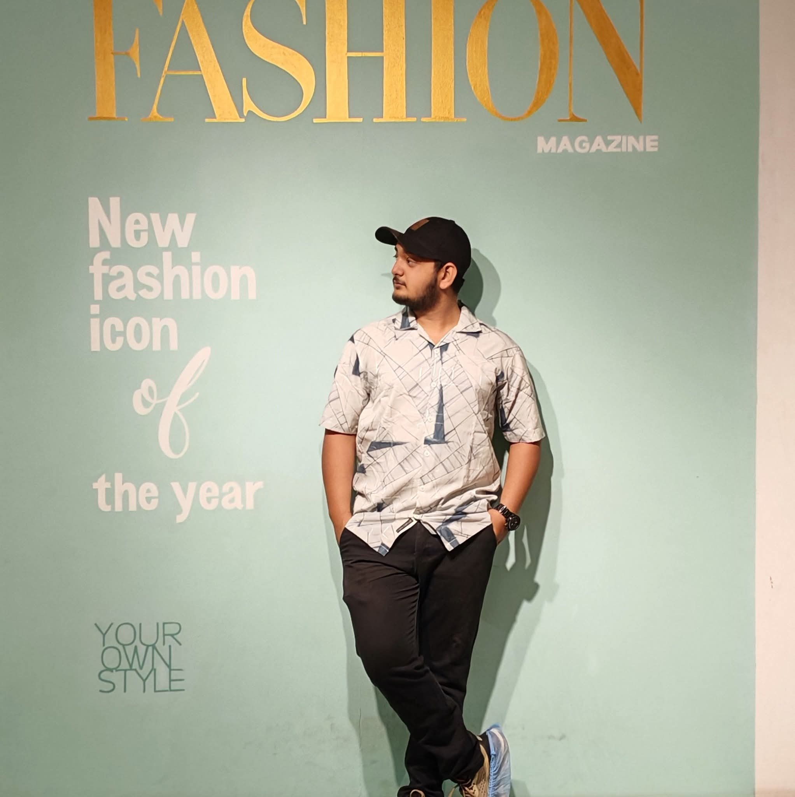
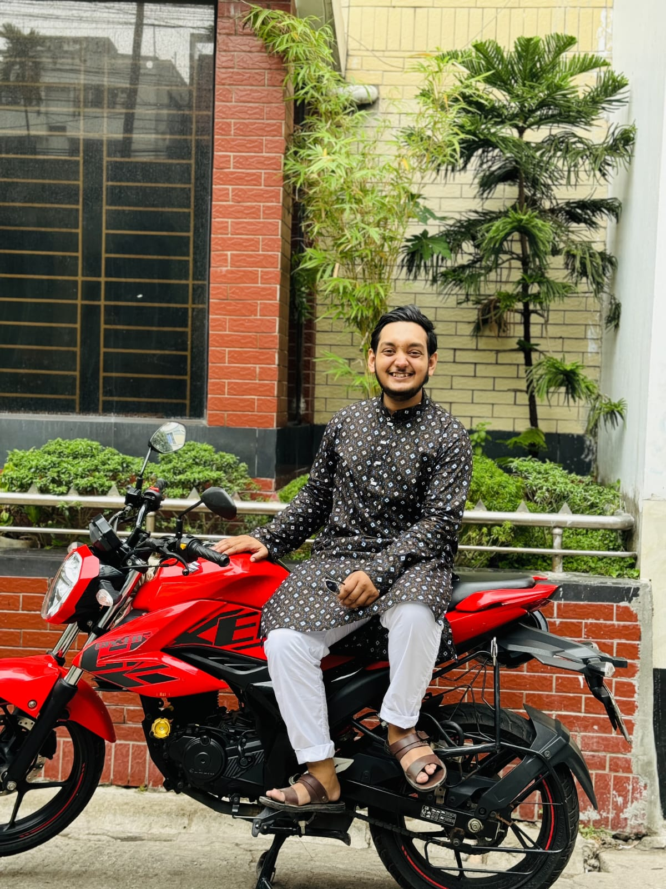

Passionate about Software Development, Cyber Security, Problem Solving, Artificial Intelligence and Web Technologies.
Contact Me
I am a Computer Science & Engineering student with strong interest in Software Engineering, Cyber Security, Machine Learning and Competitive Programming. I enjoy building modern web applications, solving programming problems, and learning new technologies every day.
University: University of Asia Pacific
Department: Computer Science & Engineering
Current CGPA: 3.80
Expected Graduation: 2028
Duration: 2021 - 2023
Worked in a professional environment, gaining experience in teamwork, responsibility, and workplace discipline.
Experience: Academic and mentoring experience
Helped others learn and develop skills through teaching, communication, and patience.
JavaFX desktop application with authentication, course management, student registration and database integration.
Database driven software using SQL and Java.
Responsive personal portfolio developed using HTML and CSS.
My immediate objective is to build a strong foundation in Artificial Intelligence and deepen my understanding of its practical applications. I am also committed to exploring Large Language Models and Networking, as these areas are central to my long-term professional growth.
I enjoy coding, reading, and exploring new technologies in my free time.
Beyond Coding
When I need a break from the pressure of academics or feel mentally overwhelmed, I enjoy going for a ride on my motorcycle and exploring different parts of Dhaka. Riding through the city's busy streets, discovering new places, and experiencing its diverse culture helps me clear my mind and regain focus. These journeys have taught me to appreciate new perspectives.
